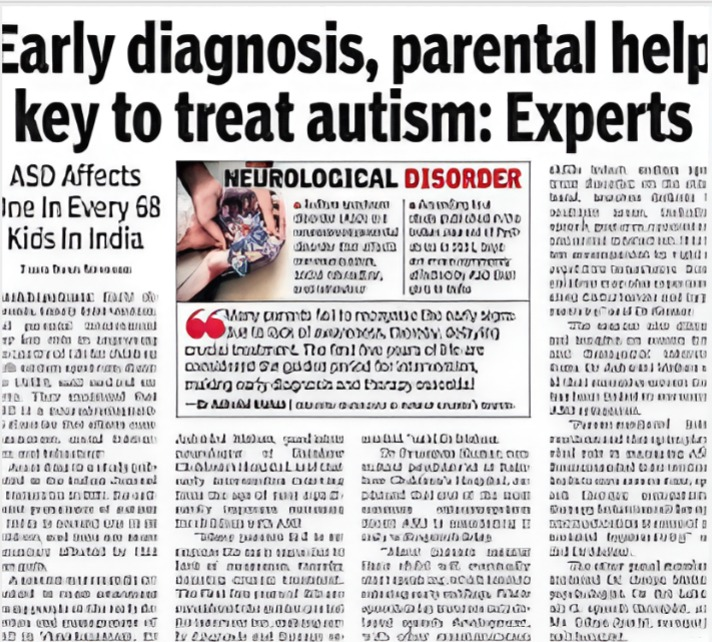

<!DOCTYPE html>
<html lang="en">
<head>
<meta charset="UTF-8"/>
<meta name="viewport" content="width=device-width,initial-scale=1.0"/>
<title>Multi-Modal ASD Detection | CPG 52 | TIET</title>
<link rel="preconnect" href="https://fonts.googleapis.com">
<link href="https://fonts.googleapis.com/css2?family=Raleway:wght@400;500;600;700&family=Source+Serif+4:ital,opsz,wght@0,8..60,300;0,8..60,400;0,8..60,600;0,8..60,700;1,8..60,400&family=JetBrains+Mono:wght@400;500&display=swap" rel="stylesheet">
<style>
*,*::before,*::after{box-sizing:border-box;margin:0;padding:0}
:root{
  --white:#FFFFFF;--off:#F6F5F2;--off2:#EEECEA;--border:#DDDBD5;
  --navy:#0D1B35;--red:#059669;--teal:#3b82f6;--slate:#4A5568;
  --text1:#0D1B35;--text2:#4A5568;--text3:#8A95A5;
  --sh:0 1px 3px rgba(13,27,53,.05),0 4px 18px rgba(13,27,53,.07);
  --sh-lg:0 8px 36px rgba(13,27,53,.11);
}
html,body{width:100%;height:100%;overflow:hidden;background:var(--white);color:var(--text1);font-family:"Raleway",sans-serif}
#root{width:100%;height:100%}
::-webkit-scrollbar{width:4px}
::-webkit-scrollbar-thumb{background:var(--border);border-radius:2px}
.shell{display:flex;width:100vw;height:100vh}
.rail{width:64px;min-width:64px;height:100vh;display:flex;flex-direction:column;align-items:center;justify-content:center;gap:9px;background:var(--white);border-right:1px solid var(--border);z-index:10;position:relative;flex-shrink:0}
.dot{width:8px;height:8px;border-radius:50%;border:1.5px solid var(--border);cursor:pointer;transition:all .3s;position:relative}
.dot::after{content:attr(data-tip);position:absolute;left:calc(100% + 12px);top:50%;transform:translateY(-50%);background:var(--navy);color:#fff;font-size:11px;font-family:"Raleway",sans-serif;white-space:nowrap;padding:4px 10px;border-radius:5px;opacity:0;pointer-events:none;transition:opacity .2s;z-index:200}
.dot:hover::after{opacity:1}
.dot.active{background:var(--red);border-color:var(--red);transform:scale(1.35)}
.dot:hover:not(.active){border-color:var(--slate)}
.rail-num{font-size:10px;font-weight:600;color:var(--text3);letter-spacing:1.5px;margin-top:18px}
.prog{position:fixed;top:0;left:64px;right:0;height:2px;background:var(--border);z-index:20}
.prog-fill{height:100%;background:var(--red);transition:width .5s cubic-bezier(.4,0,.2,1)}
.main{flex:1;height:100vh;overflow:hidden}
.sw{width:100%;height:100vh;overflow-y:auto;overflow-x:hidden;padding:22px 44px 38px;display:flex;flex-direction:column;justify-content:center}
.si{animation:si .48s cubic-bezier(.22,1,.36,1) both;zoom:1.25}
@keyframes si{from{opacity:0;transform:translateY(18px)}to{opacity:1;transform:translateY(0)}}
.tag{font-size:11px;font-weight:600;letter-spacing:3px;text-transform:uppercase;color:var(--red);margin-bottom:9px}
.h1{font-family:"Source Serif 4",serif;font-weight:700;font-size:clamp(22px,2.4vw,32px);color:var(--navy);line-height:1.2;margin-bottom:7px}
.h1 em{color:var(--red);font-style:normal}
.rule{width:40px;height:2.5px;background:var(--red);border-radius:2px;margin-bottom:20px}
p,.sm{font-size:14px;color:var(--text2);line-height:1.72;font-family:"Raleway",sans-serif}
.sm{font-size:13px}
.lbl{font-size:10px;font-weight:700;letter-spacing:2.5px;text-transform:uppercase;color:var(--text3);margin-bottom:9px}
.card{background:var(--white);border:1px solid var(--border);border-radius:10px;padding:18px;box-shadow:var(--sh)}
.card-off{background:var(--off);border:1px solid var(--border);border-radius:10px;padding:18px}
.card-dk{background:var(--navy);border-radius:10px;padding:18px;color:#fff}
.g2{display:grid;grid-template-columns:1fr 1fr;gap:13px}
.g3{display:grid;grid-template-columns:1fr 1fr 1fr;gap:12px}
.g4{display:grid;grid-template-columns:repeat(4,1fr);gap:11px}
table{width:100%;border-collapse:collapse;font-size:13px;font-family:"Raleway",sans-serif}
th{text-align:left;padding:9px 12px;font-size:11px;font-weight:700;letter-spacing:1.5px;text-transform:uppercase;color:var(--white);border-bottom:1.5px solid var(--border)}
td{padding:10px 12px;border-bottom:1px solid var(--border);color:var(--text2);vertical-align:top}
tr:last-child td{border-bottom:none}
tr:hover td{background:var(--off)}
.price{font-family:"Raleway",sans-serif;font-weight:700;color:var(--navy);font-size:14px}
.mtrack{height:7px;background:var(--off2);border-radius:3px;overflow:hidden;margin-top:6px}
.mfill{height:100%;border-radius:3px;animation:bg 1.2s cubic-bezier(.4,0,.2,1) both}
@keyframes bg{from{clip-path:inset(0 100% 0 0)}to{clip-path:inset(0 0 0 0)}}
.gr{display:grid;grid-template-columns:122px 1fr;align-items:center;gap:10px;margin-bottom:6px}
.gtrack{height:22px;background:var(--off2);border-radius:4px;position:relative;overflow:hidden}
.gbar{height:100%;border-radius:4px;position:absolute;display:flex;align-items:center;padding:0 8px;font-size:10px;font-weight:600;color:#fff;animation:bg 1s ease-out both}
.gnow{position:absolute;top:0;bottom:0;width:1.5px;background:var(--red);z-index:10;opacity:.7}
.arrows{position:fixed;bottom:24px;right:30px;display:flex;gap:9px;z-index:20}
.arr{width:38px;height:38px;border-radius:50%;border:1.5px solid var(--border);background:var(--white);color:var(--text2);font-size:15px;cursor:pointer;display:flex;align-items:center;justify-content:center;box-shadow:var(--sh);transition:all .2s;font-family:sans-serif}
.arr:hover{border-color:var(--navy);color:var(--navy);box-shadow:var(--sh-lg)}
.arr:disabled{opacity:.3;cursor:not-allowed}
.tc{background:var(--white);border:1px solid var(--border);border-radius:9px;padding:13px 15px;display:flex;gap:11px;align-items:flex-start;transition:all .22s}
.tc:hover{box-shadow:var(--sh-lg);border-color:var(--navy);transform:translateY(-2px)}
.av{width:32px;height:32px;border-radius:7px;background:var(--navy);display:flex;align-items:center;justify-content:center;flex-shrink:0;font-weight:700;font-size:11px;color:#fff;letter-spacing:.5px}
.rl{padding:7px 0;border-bottom:1px solid var(--border);display:flex;gap:10px;align-items:baseline}
.rn{font-weight:700;font-size:11px;color:var(--red);flex-shrink:0;width:22px}
/* Flow chart styles */
.fnode{padding:8px 12px;border-radius:8px;border:1.5px solid;text-align:center;font-size:11px;font-weight:600;line-height:1.3;transition:all .2s}
.farrow{display:flex;align-items:center;justify-content:center;color:var(--text3);font-size:14px;flex-shrink:0;padding:0 2px}
/* Newspaper clipping */
.newsclip{background:#fdfdf8;border:1px solid #d4d0c0;padding:10px;border-radius:3px;box-shadow:3px 4px 14px rgba(0,0,0,.15),0 1px 0 #c8c4b0;transform:rotate(-1deg);position:relative}
.newsclip::before{content:"";position:absolute;top:-2px;left:8px;right:8px;height:2px;background:linear-gradient(90deg,transparent,rgba(0,0,0,.08),transparent)}
@media(max-width:768px){.rail{width:44px;min-width:44px}.sw{padding:20px 16px 76px}.g2,.g3,.g4{grid-template-columns:1fr}.prog{left:44px}.gr{grid-template-columns:90px 1fr}}
</style>
</head>
<body>
<div id="root"></div>
<script>
const SLIDES=[
  {id:1,label:"Title"},{id:2,label:"Need Analysis"},{id:3,label:"Literature"},
  {id:4,label:"Objectives"},{id:5,label:"Data Modalities"},{id:6,label:"Architecture"},
  {id:7,label:"Assumptions"},{id:8,label:"Hardware"},{id:9,label:"Outcomes"},
  {id:10,label:"Work Plan"},{id:11,label:"Team"},
];
const TEAM=[
  {name:"Arul Goyal",     roll:"102303741",role:"QML & ML Lead",       task:"Fast-Quantum algorithms for EEG analysis"},
  {name:"Diya",           roll:"102303733",role:"Machine Learning",     task:"Feature extraction & multi-modal fusion"},
  {name:"Krit Mukul",     roll:"102303213",role:"Hardware & CV",        task:"IR camera setup & gaze-tracking model"},
  {name:"Manpreet Singh", roll:"102303216",role:"Hardware Integration", task:"EEG headset interface & gait sensor setup"},
  {name:"Lakshay Rana",   roll:"102483040",role:"Data & Documentation", task:"Dataset preprocessing & literature survey"},
];
const HW=[
  {item:"NeuroSky MindWave Mobile 2",spec:"Single-channel EEG, Bluetooth 3.0",avail:"Amazon India",price:"₹8,500"},
  {item:"Webcam (720p) + IR LEDs ×10",spec:"30fps + IR illumination ring",avail:"Flipkart",price:"₹1,800"},
  {item:"MPU-6050 IMU Module",spec:"6-axis accel + gyro, I²C",avail:"Robocraze / Local",price:"₹150"},
  {item:"IR Filter Film + Mounts",spec:"Visible-light block for IR capture",avail:"Amazon India",price:"₹300"},
  {item:"EEG Gel & Consumables",spec:"Electrode gel, velcro straps, misc",avail:"Local / Online",price:"₹500"},
];
const GANTT=[
  {label:"Setup & Data",  start:0,  dur:23, col:"#0D1B35", done:true},
  {label:"Preprocessing", start:16, dur:22, col:"#0C6B59", done:false},
  {label:"QML Training",  start:34, dur:22, col:"#C0191A", done:false},
  {label:"Fusion Model",  start:52, dur:20, col:"#6D28D9", done:false},
  {label:"Testing",       start:68, dur:16, col:"#D97706", done:false},
  {label:"Report & Demo", start:83, dur:17, col:"#374151", done:false},
];
const MONTHS=["Jan","Feb","Mar","Apr","May","Jun","Jul","Aug","Sep","Oct","Nov","Dec"];
const MCOL=["#0D1B35","#0D1B35","#0C6B59","#0C6B59","#C0191A","#C0191A","#6D28D9","#6D28D9","#D97706","#D97706","#374151","#374151"];

const REFS=[
  "Baio, J., et al. (2023). Prevalence of autism spectrum disorder. <em>MMWR Surveillance Summaries</em>, 72(2), 1–14.",
  "Bosl, W., et al. (2011). EEG complexity as a biomarker for ASD risk. <em>BMC Medicine</em>, 9(1), 18.",
  "Bone, D., et al. (2015). Robust unobtrusive multimodal assessment of Asperger syndrome. <em>IEEE Trans. Affective Computing</em>, 6(4), 380–392.",
  "Di Martino, A., et al. (2017). The autism brain imaging data exchange II. <em>Molecular Autism</em>, 8(1), 1–10.",
  "Eldridge, J., et al. (2014). EEG functional connectivity in ASD. <em>Clinical Neurophysiology</em>, 125(9), 1720–1732.",
  "Gorgolewski, K. J., et al. (2017). The brain imaging data structure. <em>Scientific Data</em>, 3(1), 1–9.",
  "Jones, W. & Klin, A. (2013). Attention to eyes in 2–6-month-old infants later diagnosed with autism. <em>Nature</em>, 504(7480), 427–431.",
  "Klin, A., et al. (2002). Visual fixation patterns during viewing of naturalistic social situations. <em>Archives of General Psychiatry</em>, 59(9), 809–816.",
  "Mari, A., et al. (2022). Transfer learning in hybrid classical-quantum neural networks. <em>Quantum</em>, 4, 340.",
  "Murias, M., et al. (2018). Feasibility and reliability of eye-tracking in ASD. <em>Biological Psychiatry</em>, 84(2), 84–90.",
  "Schuld, M., et al. (2019). Quantum machine learning in feature Hilbert spaces. <em>Physical Review Letters</em>, 122(4).",
  "Suh, H., et al. (2018). Kinematic gait analysis in children with ASD. <em>Autism Research</em>, 11(12), 1562–1571.",
];

const TIET_LOGO=`<img src="" style="width:56px;height:56px;border-radius:10px;display:block;flex-shrink:0;object-fit:contain;background:#C0191A" alt="TIET Logo"/>`;
const NEWS_IMG=``;

function mk(tag,cls,html){const e=document.createElement(tag);if(cls)e.className=cls;if(html!==undefined)e.innerHTML=html;return e;}
function div(cls,html){return mk("div",cls,html)}

// ── SLIDE 1: TITLE ─────────────────────────────────────────────────────────
function S1(){
  const r=div("si");
  r.innerHTML=`
  <div style="display:flex;flex-direction:column;justify-content:center">
    <div style="display:flex;align-items:center;gap:16px;margin-bottom:36px;padding-bottom:20px;border-bottom:1px solid var(--border)">
      <div class="tiet-logo">${TIET_LOGO}</div>
      <div>
        <div style="font-size:11px;font-weight:700;letter-spacing:2.5px;color:#C0191A;text-transform:uppercase">Thapar Institute of Engineering &amp; Technology</div>
        <div style="font-size:12px;color:var(--text3);margin-top:3px;font-weight:500">Department of Computer Science &amp; Engineering &nbsp;·&nbsp; Patiala, Punjab</div>
      </div>
      <div style="margin-left:auto;padding:6px 14px;background:var(--off);border:1px solid var(--border);border-radius:6px;text-align:center">
        <div style="font-size:10px;letter-spacing:2px;font-weight:700;color:var(--text3)">CPG NO.</div>
        <div style="font-family:Source Serif 4,serif;font-weight:700;font-size:22px;color:var(--red);line-height:1.1">52</div>
      </div>
    </div>
    <div style="margin-bottom:32px">
      <div style="font-size:11px;font-weight:600;letter-spacing:3px;text-transform:uppercase;color:var(--red);margin-bottom:10px">Capstone Project Proposal</div>
      <h1 style="font-family:Source Serif 4,serif;font-weight:700;font-size:clamp(26px,3.6vw,44px);color:var(--navy);line-height:1.18;max-width:720px;margin-bottom:12px">
        Multi-Modal ASD Detection:<br>
        <span style="color:var(--red)">EEG–Quantum Computing,</span><br>
        Eye-Tracking &amp; Gait Analysis
      </h1>
      <div style="width:40px;height:2.5px;background:var(--red);border-radius:2px;margin-bottom:14px"></div>
      <div style="display:flex;gap:28px;flex-wrap:wrap">
        <div style="font-size:14px;color:var(--text2);font-weight:500">
          Faculty Mentor: &nbsp;<strong style="color:var(--navy)">Dr. Rohit Ahuja</strong>
        </div>
        <div style="font-size:14px;color:var(--text2);font-weight:500">
          Co-Mentor: &nbsp;<strong style="color:var(--navy)">Dr. Paluck Arora</strong>
        </div>
        <div style="font-size:14px;color:var(--text2);font-weight:500">
          Academic Year: &nbsp;<strong style="color:var(--navy)">2025–26</strong>
        </div>
      </div>
    </div>
    <div>
      <div class="lbl">Project Team</div>
      <div style="display:flex;gap:10px;flex-wrap:wrap">
        ${TEAM.map(m=>`<div style="padding:10px 15px;border-radius:8px;background:var(--off);border:1px solid var(--border);min-width:130px">
          <div style="font-weight:600;font-size:14px;color:var(--navy)">${m.name}</div>
          <div style="font-size:11px;color:var(--text3);margin-top:2px">${m.roll}</div>
        </div>`).join("")}
      </div>
    </div>
  </div>`;
  return r;
}

// ── SLIDE 2: NEED ANALYSIS ─────────────────────────────────────────────────
function S2(){
  const r=div("si");
  r.innerHTML=`
  <div class="tag">02 / Need Analysis</div>
  <h1 class="h1">Why Does This Problem <em>Matter?</em></h1>
  <div class="rule"></div>
  <div style="display:grid;grid-template-columns:1fr 340px;gap:16px;align-items:start">
    <div style="display:flex;flex-direction:column;gap:12px">
      <div class="g2">
        <div class="card" style="border-left:3px solid var(--red)">
          <div class="lbl">The Diagnostic Gap</div>
          <div style="font-family:Source Serif 4,serif;font-weight:700;font-size:34px;color:var(--red);line-height:1;margin-bottom:6px">1 in 36</div>
          <p class="sm">Children diagnosed with ASD globally (CDC 2023). Diagnosis depends on clinician observation — subjective, inconsistent, and dangerously delayed.</p>
        </div>
        <div class="card" style="border-left:3px solid var(--navy)">
          <div class="lbl">Current Barriers</div>
          <div style="display:flex;flex-direction:column;gap:8px;margin-top:2px">
            ${["MRI/fMRI costs <strong>₹80,000–₹2,50,000</strong> per scan","Average diagnosis delay of <strong>4–5 years</strong>","Single-modality ML stalls at <strong>~85–88%</strong>","No portable ASD screening tool in India"].map(t=>`<div style="display:flex;gap:8px;align-items:flex-start"><div style="width:6px;height:6px;border-radius:50%;background:var(--red);flex-shrink:0;margin-top:6px"></div><p class="sm" style="margin:0">${t}</p></div>`).join("")}
          </div>
        </div>
      </div>
      <div class="card-dk" style="display:flex;gap:22px;align-items:center;padding:16px 20px">
        <div style="flex:1">
          <div style="font-size:10px;letter-spacing:2.5px;font-weight:600;color:rgba(255,255,255,.4);margin-bottom:6px">OUR SOLUTION</div>
          <div style="font-family:Source Serif 4,serif;font-weight:600;font-size:15px;line-height:1.55;color:#fff">Portable, multi-modal AI — fusing three biomarkers with Quantum ML — delivering <span style="color:#93C5FD">clinic-ready</span> screening at <span style="color:#6EE7B7">under ₹12,000</span>.</div>
        </div>
        <div style="display:flex;gap:18px;flex-shrink:0">
          ${[["&lt;₹12K","Hardware Cost"],["&gt;95%","Target Accuracy"],["Year 1–2","Best Intervention"]].map(([v,l])=>`<div style="text-align:center"><div style="font-family:Source Serif 4,serif;font-weight:700;font-size:18px;color:#93C5FD">${v}</div><div style="font-size:10px;color:rgba(255,255,255,.4);margin-top:2px">${l}</div></div>`).join("")}
        </div>
      </div>
    </div>
    <!-- Newspaper clipping -->
    <div class="newsclip">
      <div style="font-size:9px;font-weight:700;letter-spacing:2px;color:#888;text-align:center;margin-bottom:6px;text-transform:uppercase;font-family:Raleway,sans-serif;border-bottom:1px solid #d4d0c0;padding-bottom:5px">Research Evidence</div>
      ${NEWS_IMG}
      <div style="font-size:8px;color:#aaa;text-align:center;margin-top:6px;font-family:Raleway,sans-serif;font-style:italic">Literature documenting ASD detection approaches</div>
    </div>
  </div>`;
  return r;
}

// ── SLIDE 3: LITERATURE SURVEY ─────────────────────────────────────────────
function S3(){
  const r=div("si");
  const litData=[
    {auth:"Bosl et al. (2011)",mod:"EEG",col:"#0D1B35",techniques:"mMSE, SVM",dataset:"Custom Infant EEG",finding:"&gt;80% ASD risk detection from infant EEG recordings",limit:"Limited to infants; not cross-validated on clinical populations"},
    {auth:"Eldridge et al. (2014)",mod:"EEG",col:"#0D1B35",techniques:"Spectral Coherence, Granger Causality",dataset:"ABIDE I",finding:"&gt;85% sensitivity classifying ASD vs neurotypical controls",limit:"Cross-site variability; batch effects across recording sites"},
    {auth:"Klin & Jones (2002, 2013)",mod:"Eye-Tracking",col:"#059669",techniques:"AOI Fixation Analysis",dataset:"Social scene videos",finding:"Reduced eye-region fixation detectable before age 2 months",limit:"Lab-grade tracker required; no automated ML model provided"},
    {auth:"Murias et al. (2018)",mod:"Eye-Tracking",col:"#059669",techniques:"LDA, Pupil Dilation, Saccade Latency",dataset:"Custom paediatric cohort",finding:"87% classification accuracy on ASD vs control",limit:"Small sample; controlled lab conditions only"},
    {auth:"Suh et al. (2018)",mod:"Gait",col:"#3b82f6",techniques:"IMU Sensors, Random Forest",dataset:"Wearable IMU (custom)",finding:"<strong>95% accuracy</strong> using stride, cadence, symmetry ratio",limit:"Walking task only; no stereotypy capture"},
    {auth:"Mari et al. (2022)",mod:"QML",col:"#6D28D9",techniques:"VQC, Quantum Kernel SVM",dataset:"Benchmark EEG",finding:"<strong>98.9%</strong> preliminary accuracy, outperforms CNN baseline",limit:"Quantum hardware noise; limited qubit count on current QPUs"},
  ];
  r.innerHTML=`
  <div class="tag">03 / Literature Survey</div>
  <h1 class="h1">Prior Work & <em>Research Landscape</em></h1>
  <div class="rule" style="margin-bottom:14px"></div>
  <div style="border-radius:10px;overflow:hidden;border:1px solid var(--border);box-shadow:var(--sh)">
    <table style="margin:0">
      <thead style="background:var(--navy)">
        <tr>
          <th style="width:130px">Author(s)</th>
          <th style="width:100px">Modality</th>
          <th style="width:160px">Techniques</th>
          <th style="width:120px">Dataset</th>
          <th>Key Finding</th>
          <th>Limitation</th>
        </tr>
      </thead>
      <tbody>
        ${litData.map((d,i)=>`<tr style="background:${i%2===0?"var(--white)":"var(--off)"}">
          <td style="font-weight:600;color:var(--navy);font-size:12px">${d.auth}</td>
          <td><span style="padding:3px 8px;border-radius:4px;background:${d.col}18;color:${d.col};font-size:10px;font-weight:700;letter-spacing:.5px;white-space:nowrap">${d.mod}</span></td>
          <td style="font-size:12px">${d.techniques}</td>
          <td style="font-size:11px;color:var(--text3)">${d.dataset}</td>
          <td style="font-size:12px">${d.finding}</td>
          <td style="font-size:11px;color:var(--text3)">${d.limit}</td>
        </tr>`).join("")}
      </tbody>
    </table>
  </div>
  <div class="card-off" style="border-radius:9px;border:1px solid var(--border);padding:12px 16px;margin-top:12px">
    <div class="lbl" style="margin-bottom:5px">Research Gap</div>
    <p class="sm"><strong>No published study</strong> combines all three modalities — EEG, eye-tracking, and gait — within a unified Quantum Machine Learning framework. Multi-modal fusion consistently yields 8–12% accuracy gains over single-modality baselines. This gap is the core novelty of this project.</p>
  </div>`;
  return r;
}

// ── SLIDE 4: OBJECTIVES ────────────────────────────────────────────────────
function S4(){
  const r=div("si");
  r.innerHTML=`
  <div class="tag">04 / Problem Statement & Objectives</div>
  <h1 class="h1">What We Aim to <em>Achieve</em></h1>
  <div class="rule"></div>
  <div class="card" style="border-left:3px solid var(--navy);margin-bottom:14px;padding:14px 18px">
    <div class="lbl">Problem Statement</div>
    <p class="sm">ASD diagnosis depends on subjective behavioural observation and expensive neuroimaging, limiting early, objective detection in resource-constrained settings. A <strong>portable, multi-modal AI screening system</strong> combining EEG, eye-tracking, and gait with Quantum ML is to be built.</p>
  </div>
  ${[
    {n:"01",t:"Multi-Modal Data Acquisition",d:"Design a synchronised pipeline capturing EEG, IR gaze, and IMU gait simultaneously from the same subject.",tag:"Hardware"},
    {n:"02",t:"Quantum-Enhanced EEG Processing",d:"Implement VQC circuits (Qiskit / PennyLane) achieving ≥95% EEG classification, exceeding the classical CNN baseline.",tag:"QML"},
    {n:"03",t:"Multi-Modal Fusion Architecture",d:"Develop a late-fusion model combining all three classifiers to eliminate single-source false positives and achieve ≥92% overall accuracy.",tag:"ML Fusion"},
    {n:"04",t:"Clinic-Ready Deployment",d:"Deliver an MRI-free wearable kit with a React dashboard for real-time ASD risk scoring and automated report generation.",tag:"Deployment"},
  ].map(o=>`
    <div style="display:flex;gap:13px;align-items:flex-start;margin-bottom:10px;padding:12px 16px;background:var(--off);border:1px solid var(--border);border-radius:9px">
      <div style="font-family:Source Serif 4,serif;font-weight:700;font-size:20px;color:var(--red);min-width:26px;line-height:1.3;opacity:.8">${o.n}</div>
      <div style="flex:1">
        <div style="display:flex;align-items:center;gap:9px;margin-bottom:3px">
          <div style="font-weight:600;font-size:14px;color:var(--navy)">${o.t}</div>
          <div style="padding:2px 8px;background:var(--navy);color:#fff;border-radius:4px;font-size:10px;font-weight:700;letter-spacing:1px;flex-shrink:0">${o.tag.toUpperCase()}</div>
        </div>
        <p class="sm" style="margin:0;font-size:13px">${o.d}</p>
      </div>
    </div>`).join("")}`;
  return r;
}

// ── SLIDE 5: DATA MODALITIES ───────────────────────────────────────────────
function S5(){
  const r=div("si");
  r.innerHTML=`
  <div class="tag">05 / Methodology · Data Modalities</div>
  <h1 class="h1">Three-Source <em>Signal Architecture</em></h1>
  <div class="rule" style="margin-bottom:14px"></div>
  <div class="g3" style="margin-bottom:14px">
    ${[
      {label:"EEG",sub:"Brain Signals",col:"var(--navy)",bg:"#EEF2FF",
       dataset:"ABIDE I/II · OpenNeuro",models:"Quantum VQC + Kernel SVM",
       pts:["14–32 ch dry-electrode headset","Delta / Theta / Alpha / Beta bands","Amplitude encoding for QML","Spectral PSD feature extraction"]},
      {label:"Eye-Tracking",sub:"Visual Gaze Patterns",col:"var(--red)",bg:"#ECFDF5",
       dataset:"Custom social scene videos",models:"LSTM + Self-Attention",
       pts:["IR LEDs + 1080p webcam","Fixation, saccade, gaze entropy","Reduced social fixation — ASD marker","Pupil dilation dynamics"]},
      {label:"Gait",sub:"Kinematic Motion",col:"var(--teal)",bg:"#EFF6FF",
       dataset:"Custom IMU recordings",models:"Random Forest + 1D-CNN",
       pts:["MPU-6050 IMU wearable sensor","Stride length, cadence, symmetry","Repetitive motion detection","95% validated accuracy (Suh et al.)"]},
    ].map(m=>`
      <div class="card" style="border-top:3px solid ${m.col}">
        <div style="font-family:Source Serif 4,serif;font-weight:700;font-size:17px;color:var(--navy);margin-bottom:2px">${m.label}</div>
        <div style="font-size:11px;color:var(--text3);margin-bottom:10px;font-weight:600">${m.sub}</div>
        ${m.pts.map(pt=>`<div style="display:flex;gap:7px;margin-bottom:6px;align-items:flex-start"><div style="width:5px;height:5px;border-radius:50%;background:${m.col};flex-shrink:0;margin-top:5px"></div><p class="sm" style="margin:0;font-size:12px">${pt}</p></div>`).join("")}
        <div style="margin-top:10px;padding-top:10px;border-top:1px solid var(--border)">
          <div style="font-size:10px;font-weight:700;letter-spacing:1px;color:var(--text3);margin-bottom:4px">DATASET</div>
          <div style="font-size:11px;color:${m.col};font-weight:600">${m.dataset}</div>
          <div style="font-size:10px;font-weight:700;letter-spacing:1px;color:var(--text3);margin-top:6px;margin-bottom:4px">MODEL</div>
          <div style="font-size:11px;color:var(--navy);font-weight:600">${m.models}</div>
        </div>
      </div>`).join("")}
  </div>
  <!-- Improved Fusion Pipeline SVG -->
  <div style="background:var(--off);border:1px solid var(--border);border-radius:10px;padding:14px 18px">
    <div class="lbl" style="margin-bottom:10px">Fusion Pipeline</div>
    <svg viewBox="0 0 900 58" xmlns="http://www.w3.org/2000/svg" style="width:100%;height:auto;display:block;overflow:visible">
      <defs>
        <marker id="ar" markerWidth="7" markerHeight="7" refX="6" refY="3.5" orient="auto"><path d="M0,0 L0,7 L7,3.5z" fill="#94A3B8"/></marker>
        <marker id="ar2" markerWidth="7" markerHeight="7" refX="6" refY="3.5" orient="auto"><path d="M0,0 L0,7 L7,3.5z" fill="#0D1B35"/></marker>
      </defs>
      <rect x="0"   y="11" width="110" height="34" rx="7" fill="#EEF2FF" stroke="#C7D2FE" stroke-width="1.5"/>
      <text x="55"  y="32" text-anchor="middle" font-family="Raleway" font-size="11" font-weight="700" fill="#1E3A5F">EEG Signals</text>
      <rect x="128" y="11" width="118" height="34" rx="7" fill="#ECFDF5" stroke="#A7F3D0" stroke-width="1.5"/>
      <text x="187" y="32" text-anchor="middle" font-family="Raleway" font-size="11" font-weight="700" fill="#065F46">Eye-Gaze Data</text>
      <rect x="264" y="11" width="110" height="34" rx="7" fill="#EFF6FF" stroke="#BFDBFE" stroke-width="1.5"/>
      <text x="319" y="32" text-anchor="middle" font-family="Raleway" font-size="11" font-weight="700" fill="#1D4ED8">Gait Vectors</text>
      <!-- + signs -->
      <text x="118" y="32" text-anchor="middle" font-family="Raleway" font-size="14" font-weight="700" fill="#94A3B8">+</text>
      <text x="254" y="32" text-anchor="middle" font-family="Raleway" font-size="14" font-weight="700" fill="#94A3B8">+</text>
      <!-- Arrow to feature -->
      <line x1="384" y1="28" x2="408" y2="28" stroke="#94A3B8" stroke-width="1.5" marker-end="url(#ar)"/>
      <rect x="416" y="9" width="130" height="38" rx="7" fill="#F5F3FF" stroke="#DDD6FE" stroke-width="1.5"/>
      <text x="481" y="26" text-anchor="middle" font-family="Raleway" font-size="11" font-weight="700" fill="#5B21B6">Feature</text>
      <text x="481" y="40" text-anchor="middle" font-family="Raleway" font-size="10" fill="#6D28D9">Extraction</text>
      <!-- Arrow to QML -->
      <line x1="554" y1="28" x2="578" y2="28" stroke="#94A3B8" stroke-width="1.5" marker-end="url(#ar)"/>
      <rect x="586" y="9" width="130" height="38" rx="7" fill="#FEF2F2" stroke="#FECACA" stroke-width="1.5"/>
      <text x="651" y="26" text-anchor="middle" font-family="Raleway" font-size="11" font-weight="700" fill="#991B1B">QML Fusion</text>
      <text x="651" y="40" text-anchor="middle" font-family="Raleway" font-size="10" fill="#B91C1C">Late Ensemble</text>
      <!-- Arrow to output -->
      <line x1="724" y1="28" x2="748" y2="28" stroke="#94A3B8" stroke-width="1.5" marker-end="url(#ar)"/>
      <rect x="756" y="6" width="136" height="44" rx="7" fill="#0D1B35"/>
      <text x="824" y="26" text-anchor="middle" font-family="Raleway" font-size="11" font-weight="700" fill="#fff">ASD Risk</text>
      <text x="824" y="40" text-anchor="middle" font-family="Raleway" font-size="10" fill="rgba(255,255,255,.6)">Score + Report</text>
    </svg>
  </div>`;
  return r;
}

// ── SLIDE 6: HYBRID ARCHITECTURE FLOWCHART ─────────────────────────────────
function S6(){
  const r=div("si");
  r.innerHTML=`
  <div class="tag">06 / Methodology</div>
  <h1 class="h1">Hybrid <em>Architecture</em></h1>
  <div class="rule" style="margin-bottom:12px"></div>
  <div style="display:flex;flex-direction:column;gap:6px">
    <!-- Row 0: Acquire -->
    <div style="display:grid;grid-template-columns:1fr 1fr 1fr;gap:10px">
      <div class="fnode" style="background:#EEF2FF;border-color:#C7D2FE;color:#1E3A5F">EEG Headset<br/><span style="font-size:10px;font-weight:400;opacity:.7">NeuroSky MindWave</span></div>
      <div class="fnode" style="background:#ECFDF5;border-color:#A7F3D0;color:#065F46">IR Webcam<br/><span style="font-size:10px;font-weight:400;opacity:.7">720p + IR LED ring</span></div>
      <div class="fnode" style="background:#EFF6FF;border-color:#BFDBFE;color:#1D4ED8">IMU Sensor<br/><span style="font-size:10px;font-weight:400;opacity:.7">MPU-6050 wearable</span></div>
    </div>
    <!-- Arrows -->
    <div style="display:grid;grid-template-columns:1fr 1fr 1fr;gap:10px">
      <div style="text-align:center;font-size:16px;color:#94A3B8">↓</div>
      <div style="text-align:center;font-size:16px;color:#94A3B8">↓</div>
      <div style="text-align:center;font-size:16px;color:#94A3B8">↓</div>
    </div>
    <!-- Row 1: Preprocess -->
    <div style="display:grid;grid-template-columns:1fr 1fr 1fr;gap:10px">
      <div class="fnode" style="background:#F8FAFC;border-color:#E2E8F0;color:var(--text2)">Preprocessing<br/><span style="font-size:10px;font-weight:400">Band-pass filter · ICA</span></div>
      <div class="fnode" style="background:#F8FAFC;border-color:#E2E8F0;color:var(--text2)">Preprocessing<br/><span style="font-size:10px;font-weight:400">Fixation / saccade extract</span></div>
      <div class="fnode" style="background:#F8FAFC;border-color:#E2E8F0;color:var(--text2)">Preprocessing<br/><span style="font-size:10px;font-weight:400">Gait cycle segmentation</span></div>
    </div>
    <!-- Arrows -->
    <div style="display:grid;grid-template-columns:1fr 1fr 1fr;gap:10px">
      <div style="text-align:center;font-size:16px;color:#94A3B8">↓</div>
      <div style="text-align:center;font-size:16px;color:#94A3B8">↓</div>
      <div style="text-align:center;font-size:16px;color:#94A3B8">↓</div>
    </div>
    <!-- Row 2: Feature + Model -->
    <div style="display:grid;grid-template-columns:1fr 1fr 1fr;gap:10px">
      <div class="fnode" style="background:#EEF2FF;border-color:#A5B4FC;color:#3730A3">Spectral PSD Features<br/><span style="font-size:10px;font-weight:400;opacity:.8">→ Quantum VQC + K-SVM</span></div>
      <div class="fnode" style="background:#ECFDF5;border-color:#6EE7B7;color:#065F46">Gaze Entropy Features<br/><span style="font-size:10px;font-weight:400;opacity:.8">→ LSTM + Attention</span></div>
      <div class="fnode" style="background:#EFF6FF;border-color:#93C5FD;color:#1D4ED8">Kinematic Features<br/><span style="font-size:10px;font-weight:400;opacity:.8">→ Random Forest + CNN</span></div>
    </div>
    <!-- Converging arrows -->
    <div style="display:flex;align-items:flex-end;justify-content:center;gap:0;height:28px;position:relative">
      <svg viewBox="0 0 600 28" style="width:100%;max-width:600px;height:28px">
        <line x1="100" y1="2" x2="300" y2="26" stroke="#94A3B8" stroke-width="1.5" marker-end="url(#ar3)"/>
        <line x1="300" y1="2" x2="300" y2="22" stroke="#94A3B8" stroke-width="1.5" marker-end="url(#ar3)"/>
        <line x1="500" y1="2" x2="300" y2="26" stroke="#94A3B8" stroke-width="1.5" marker-end="url(#ar3)"/>
        <defs><marker id="ar3" markerWidth="6" markerHeight="6" refX="5" refY="3" orient="auto"><path d="M0,0 L0,6 L6,3z" fill="#94A3B8"/></marker></defs>
      </svg>
    </div>
    <!-- Row 3: Fusion + Output -->
    <div style="display:grid;grid-template-columns:2fr 1fr;gap:10px">
      <div class="fnode" style="background:var(--navy);border-color:var(--navy);color:#fff;padding:12px 16px">
        Late Fusion — Weighted Ensemble
        <div style="font-size:10px;font-weight:400;opacity:.7;margin-top:2px">Optimised weight combination across three modality classifiers</div>
      </div>
      <div class="fnode" style="background:#059669;border-color:#059669;color:#fff;padding:12px 16px">
        ASD Risk Score
        <div style="font-size:10px;font-weight:400;opacity:.85;margin-top:2px">0–100% + Clinician Dashboard + PDF Report</div>
      </div>
    </div>
  </div>`;
  return r;
}

// ── SLIDE 7: ASSUMPTIONS & CONSTRAINTS ────────────────────────────────────
function S7(){
  const r=div("si");
  r.innerHTML=`
  <div class="tag">07 / Assumptions & Constraints</div>
  <h1 class="h1">Project <em>Boundaries</em></h1>
  <div class="rule"></div>
  <div class="g2" style="align-items:start">
    <div>
      <div style="font-family:Source Serif 4,serif;font-weight:700;font-size:16px;color:var(--navy);margin-bottom:12px;display:flex;align-items:center;gap:8px">
        <div style="width:4px;height:18px;background:var(--red);border-radius:2px"></div>
        Assumptions
      </div>
      ${[
        ["EEG Signal Quality","NeuroSky MindWave provides sufficient signal quality for alpha/beta band classification in a non-clinical setting."],
        ["Subject Cooperation","Participants can remain seated and focused during the 5-minute data collection session."],
        ["Dataset Representativeness","ABIDE I/II and OpenNeuro EEG collections are representative of the broader ASD population for model pre-training."],
        ["Cloud Quantum Access","IBM Quantum Runtime and PennyLane simulator remain accessible for VQC training throughout the project timeline."],
        ["College Infrastructure","Lab GPU workstation, Raspberry Pi, Arduino, and interconnecting cables are available for use without additional cost."],
      ].map(([t,d])=>`<div style="display:flex;gap:10px;align-items:flex-start;margin-bottom:10px;padding:10px 13px;background:var(--off);border:1px solid var(--border);border-radius:8px">
        <div style="width:7px;height:7px;border-radius:50%;background:var(--red);flex-shrink:0;margin-top:5px"></div>
        <div><div style="font-weight:600;font-size:13px;color:var(--navy);margin-bottom:2px">${t}</div><p class="sm" style="margin:0;font-size:12px">${d}</p></div>
      </div>`).join("")}
    </div>
    <div>
      <div style="font-family:Source Serif 4,serif;font-weight:700;font-size:16px;color:var(--navy);margin-bottom:12px;display:flex;align-items:center;gap:8px">
        <div style="width:4px;height:18px;background:var(--teal);border-radius:2px"></div>
        Constraints
      </div>
      ${[
        ["Single-Channel EEG","NeuroSky provides 1-channel EEG vs clinical 64+ channel systems, limiting spatial resolution."],
        ["Ambient Lighting","IR-based gaze tracking may degrade in high ambient illumination without controlled lighting."],
        ["Hardware Budget","Total self-funded hardware limited to ₹12,000; college provides RPi, Arduino, and cables."],
        ["Dataset Access","Limited to publicly available repositories; proprietary clinical paediatric datasets are inaccessible."],
        ["Quantum Simulation","All VQC experiments run on simulators or IBM Quantum cloud; on-device QPU results may vary due to noise."],
        ["Timeline","Project is constrained to one academic year — January to December 2026."],
      ].map(([t,d])=>`<div style="display:flex;gap:10px;align-items:flex-start;margin-bottom:10px;padding:10px 13px;background:var(--off);border:1px solid var(--border);border-radius:8px">
        <div style="width:7px;height:7px;border-radius:50%;background:var(--teal);flex-shrink:0;margin-top:5px"></div>
        <div><div style="font-weight:600;font-size:13px;color:var(--navy);margin-bottom:2px">${t}</div><p class="sm" style="margin:0;font-size:12px">${d}</p></div>
      </div>`).join("")}
    </div>
  </div>`;
  return r;
}

// ── SLIDE 8: HARDWARE ──────────────────────────────────────────────────────
function S8(){
  const r=div("si");
  r.innerHTML=`
  <div class="tag">08 / Hardware Requirements</div>
  <h1 class="h1">Minimal Hardware — <em>Under ₹12,000</em></h1>
  <div class="rule"></div>
  <div style="border-radius:10px;overflow:hidden;border:1px solid var(--border);box-shadow:var(--sh);margin-bottom:10px">
    <table style="margin:0">
      <thead style="background:var(--navy)">
        <tr>
          <th>Component</th><th>Specification</th><th>Source in India</th><th style="text-align:right">Price (INR)</th>
        </tr>
      </thead>
      <tbody>
        ${HW.map((h,i)=>`<tr style="background:${i%2===0?"var(--white)":"var(--off)"}">
          <td style="font-weight:600;color:var(--navy)">${h.item}</td>
          <td style="font-size:12px">${h.spec}</td>
          <td><span style="background:var(--off2);padding:2px 7px;border-radius:4px;font-size:11px">${h.avail}</span></td>
          <td style="text-align:right"><span class="price">${h.price}</span></td>
        </tr>`).join("")}
      </tbody>
    </table>
  </div>
  <div style="display:grid;grid-template-columns:2fr 1fr;gap:12px">
    <div class="card-off" style="border-radius:9px;border:1px solid var(--border);padding:12px 16px">
      <div class="lbl" style="margin-bottom:6px">Provided by College (No Cost)</div>
      <div style="display:flex;gap:8px;flex-wrap:wrap">
        ${["Raspberry Pi 4 (4 GB)","Arduino Nano","HC-05 BLE Module","USB Cables & Connectors","Lab GPU Workstation"].map(i=>`<span style="padding:4px 10px;border-radius:5px;background:var(--white);border:1px solid var(--border);font-size:12px;font-weight:500;color:var(--navy)">${i}</span>`).join("")}
      </div>
    </div>
    <div style="background:var(--navy);border-radius:9px;padding:14px 18px;display:flex;flex-direction:column;justify-content:center">
      <div style="font-size:10px;letter-spacing:2px;font-weight:600;color:rgba(255,255,255,.4)">Self-Funded Budget</div>
      <div style="font-family:Source Serif 4,serif;font-weight:700;font-size:28px;color:#93C5FD;margin-top:4px">₹11,250</div>
      <div style="font-size:11px;color:rgba(255,255,255,.4);margin-top:2px">vs ₹80K–₹2.5L for MRI</div>
    </div>
  </div>`;
  return r;
}

// ── SLIDE 9: OUTCOMES ──────────────────────────────────────────────────────
function S9(){
  const r=div("si");
  r.innerHTML=`
  <div class="tag">09 / Project Outcomes</div>
  <h1 class="h1">Deliverables & <em>Performance Targets</em></h1>
  <div class="rule" style="margin-bottom:12px"></div>
  <!-- 3 Main deliverables -->
  <div class="g3" style="margin-bottom:14px">
    ${[
      {n:"D1",t:"Wearable Hardware Kit",d:"Portable EEG headset + IR eye-tracker + IMU gait sensor. Total self-funded cost ≤ ₹12,000. Deployable in any school or clinic.",col:"var(--navy)"},
      {n:"D2",t:"Clinician Dashboard",d:"React 18 web app with real-time ASD risk scoring, EEG waveform, gaze heatmap, gait timeline and automated PDF report generation.",col:"var(--red)"},
      {n:"D3",t:"Research Publication",d:"Paper targeting IEEE EMBC 2027 or Nature Digital Medicine — novel QML multi-modal ASD detection framework.",col:"var(--teal)"},
    ].map(d=>`<div style="padding:18px;border-radius:10px;border:2px solid ${d.col};background:${d.col}08;position:relative">
      <div style="font-family:Source Serif 4,serif;font-weight:800;font-size:28px;color:${d.col};opacity:.2;position:absolute;top:10px;right:14px;line-height:1">${d.n}</div>
      <div style="font-weight:700;font-size:14px;color:var(--navy);margin-bottom:6px">${d.t}</div>
      <p class="sm" style="margin:0;font-size:12px">${d.d}</p>
    </div>`).join("")}
  </div>
  <!-- Performance metrics -->
  <div class="card">
    <div class="lbl" style="margin-bottom:10px">Performance Targets & Benchmarks</div>
    <div class="g2">
      <div>
        ${[
          {n:"Quantum VQC — EEG Only",v:98.9,col:"var(--navy)"},
          {n:"Gait Analysis (Standalone)",v:95,col:"var(--teal)"},
          {n:"Multi-Modal Fusion (Target)",v:92,col:"var(--red)"},
        ].map((m,i)=>`<div style="margin-bottom:11px">
          <div style="display:flex;justify-content:space-between;margin-bottom:4px">
            <span style="font-size:13px;color:var(--text2);font-weight:600">${m.n}</span>
            <span style="font-weight:700;font-size:14px;color:${m.col}">${m.v}%</span>
          </div>
          <div class="mtrack"><div class="mfill" style="width:${m.v}%;background:${m.col};animation-delay:${i*0.13}s"></div></div>
        </div>`).join("")}
      </div>
      <div>
        ${[
          {n:"Classical CNN — EEG Only",v:88,col:"var(--text3)"},
          {n:"Eye-Tracking (Standalone)",v:87,col:"var(--text3)"},
          {n:"False Positive Rate (Target)",v:8,col:"#D97706",suffix:"% (≤8%)"},
        ].map((m,i)=>`<div style="margin-bottom:11px">
          <div style="display:flex;justify-content:space-between;margin-bottom:4px">
            <span style="font-size:13px;color:var(--text2);font-weight:500">${m.n}</span>
            <span style="font-weight:700;font-size:14px;color:${m.col}">${m.v}${m.suffix||"%"}</span>
          </div>
          <div class="mtrack"><div class="mfill" style="width:${m.v}%;background:${m.col};animation-delay:${(i+3)*0.13}s"></div></div>
        </div>`).join("")}
      </div>
    </div>
  </div>`;
  return r;
}

// ── SLIDE 10: WORK PLAN ────────────────────────────────────────────────────
function S10(){
  const r=div("si");
  const nowPct=21;
  r.innerHTML=`
  <div class="tag">10 / Work Plan</div>
  <h1 class="h1">Project <em>Timeline</em> — Jan to Dec 2026</h1>
  <div class="rule" style="margin-bottom:10px"></div>
  <div class="card" style="margin-bottom:11px;padding:14px 18px">
    <div style="display:grid;grid-template-columns:122px 1fr;gap:10px;margin-bottom:8px;align-items:center">
      <div class="lbl" style="text-align:right;margin:0">Phase</div>
      <div style="display:flex">${MONTHS.map((m,i)=>`<div style="flex:1;text-align:center;font-size:10px;font-weight:700;letter-spacing:.5px;color:${MCOL[i]}">${m}</div>`).join("")}</div>
    </div>
    <div style="width:100%;height:1px;background:var(--border);margin-bottom:9px"></div>
    ${GANTT.map((g,i)=>`
      <div class="gr" style="animation-delay:${i*0.09}s">
        <div style="font-size:12px;font-weight:600;color:var(--text2);text-align:right;display:flex;align-items:center;justify-content:flex-end;gap:5px">
          ${g.done?`<span style="width:6px;height:6px;border-radius:50%;background:var(--red);flex-shrink:0"></span>`:""}
          ${g.label}
        </div>
        <div class="gtrack">
          <div class="gnow" style="left:${nowPct}%"></div>
          <div class="gbar" style="left:${g.start}%;width:${g.dur}%;background:${g.col};animation-delay:${i*0.1}s"></div>
        </div>
      </div>`).join("")}
    <div style="display:grid;grid-template-columns:122px 1fr;gap:10px;margin-top:5px">
      <div></div>
      <div style="position:relative;height:14px"><div style="position:absolute;left:${nowPct}%;transform:translateX(-50%);font-size:10px;font-weight:700;color:var(--red);white-space:nowrap">▲ Now (Mar)</div></div>
    </div>
  </div>
  <div class="g2">
    <div class="card-off" style="border-radius:9px;border:1px solid var(--border)">
      <div class="lbl" style="margin-bottom:8px">Milestones</div>
      ${[
        {m:"Jan–Mar 2026",t:"Hardware setup, dataset download, env config",col:"#0D1B35",done:true},
        {m:"Feb–Apr 2026",t:"EEG preprocessing, gaze & gait extraction",col:"#0C6B59",done:false},
        {m:"May–Jul 2026",t:"QML circuit implementation + classical baselines",col:"#C0191A",done:false},
        {m:"Jul–Sep 2026",t:"Multi-modal fusion & hyperparameter tuning",col:"#6D28D9",done:false},
        {m:"Oct–Dec 2026",t:"Final demo, dashboard, paper draft — evaluation",col:"#374151",done:false},
      ].map(ms=>`<div style="display:flex;gap:9px;margin-bottom:8px;align-items:flex-start">
        <div style="width:6px;height:6px;border-radius:50%;background:${ms.col};flex-shrink:0;margin-top:5px"></div>
        <div><div style="font-size:11px;font-weight:700;color:${ms.col};letter-spacing:.5px">${ms.m}</div><p class="sm" style="margin:0;font-size:12px">${ms.t}</p></div>
      </div>`).join("")}
    </div>
    <div class="card-off" style="border-radius:9px;border:1px solid var(--border)">
      <div class="lbl" style="margin-bottom:8px">Phase Legend</div>
      ${GANTT.map(g=>`<div style="display:flex;align-items:center;gap:8px;margin-bottom:7px">
        <div style="width:12px;height:12px;border-radius:3px;background:${g.col};flex-shrink:0"></div>
        <span style="font-size:12px;color:var(--text2)">${g.label}${g.done?" <span style=\'font-size:10px;color:var(--red);font-weight:700\'>(in progress)</span>":""}</span>
      </div>`).join("")}
      <div style="display:flex;align-items:center;gap:8px;margin-top:6px;padding-top:8px;border-top:1px solid var(--border)">
        <div style="width:1.5px;height:12px;background:var(--red)"></div>
        <span style="font-size:12px;color:var(--text2)">Current date marker</span>
      </div>
    </div>
  </div>`;
  return r;
}

// ── SLIDE 11: TEAM & REFERENCES ────────────────────────────────────────────
function S11(){
  const r=div("si");
  r.innerHTML=`
  <div class="tag">11 / Team & References</div>
  <h1 class="h1">Individual Roles & <em>Citations</em></h1>
  <div class="rule" style="margin-bottom:10px"></div>
  <div style="display:grid;grid-template-columns:repeat(auto-fill,minmax(240px,1fr));gap:8px;margin-bottom:12px">
    ${TEAM.map(m=>`<div class="tc">
      <div class="av">${m.name.split(" ").map(w=>w[0]).join("").slice(0,2)}</div>
      <div>
        <div style="font-weight:700;font-size:13px;color:var(--navy)">${m.name}</div>
        <div style="font-size:10px;color:var(--text3);margin-bottom:2px">${m.roll}</div>
        <div style="font-size:9px;font-weight:700;color:var(--red);letter-spacing:1px;text-transform:uppercase;margin-bottom:2px">${m.role}</div>
        <p class="sm" style="margin:0;font-size:11px;line-height:1.4">${m.task}</p>
      </div>
    </div>`).join("")}
  </div>
  <div class="card" style="padding:12px 16px">
    <div class="lbl" style="margin-bottom:6px">References</div>
    <div style="display:grid;grid-template-columns:1fr 1fr;column-gap:20px">
      ${REFS.map((ref,i)=>`<div class="rl" style="border-bottom:${i<REFS.length-2?"1px solid var(--border)":"none"};padding:4px 0;align-items:flex-start">
        <span class="rn">[${String(i+1).padStart(2,"0")}]</span>
        <p class="sm" style="margin:0;font-size:11px;line-height:1.4">${ref}</p>
      </div>`).join("")}
    </div>
  </div>`;
  return r;
}

const FNS=[S1,S2,S3,S4,S5,S6,S7,S8,S9,S10,S11];
let cur=0;

function render(){
  const app=document.getElementById("root");app.innerHTML="";
  const shell=mk("div","shell");
  const rail=mk("div","rail");
  SLIDES.forEach((s,i)=>{
    const d=mk("div",`dot${i===cur?" active":""}`);
    d.setAttribute("data-tip",`${String(s.id).padStart(2,"0")} · ${s.label}`);
    d.addEventListener("click",()=>go(i));
    rail.appendChild(d);
  });
  const rn=mk("div","rail-num");rn.textContent=`${String(cur+1).padStart(2,"0")}/${SLIDES.length}`;rail.appendChild(rn);
  const pb=mk("div","prog");const pf=mk("div","prog-fill");pf.style.width=`${((cur+1)/SLIDES.length)*100}%`;pb.appendChild(pf);
  const main=mk("div","main");const sw=mk("div","sw");sw.appendChild(FNS[cur]());main.appendChild(sw);
  const arrows=mk("div","arrows");
  const prev=document.createElement("button");prev.className="arr";prev.innerHTML="&#8592;";prev.disabled=cur===0;prev.addEventListener("click",()=>go(cur-1));
  const next=document.createElement("button");next.className="arr";next.innerHTML="&#8594;";next.disabled=cur===SLIDES.length-1;next.addEventListener("click",()=>go(cur+1));
  arrows.append(prev,next);
  shell.append(rail,main);app.append(pb,shell,arrows);
}

function go(i){if(i<0||i>=SLIDES.length)return;cur=i;render();}
document.addEventListener("keydown",e=>{
  if(e.key==="ArrowRight"||e.key==="ArrowDown")go(cur+1);
  if(e.key==="ArrowLeft"||e.key==="ArrowUp")go(cur-1);
});
render();
</script>
</body>
</html>